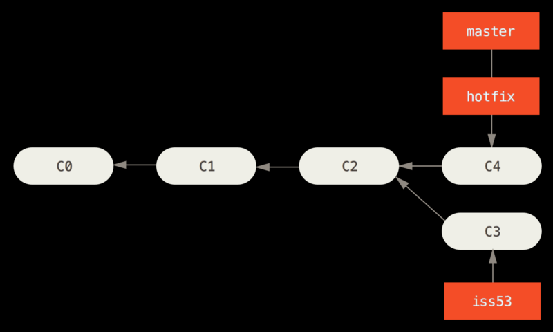
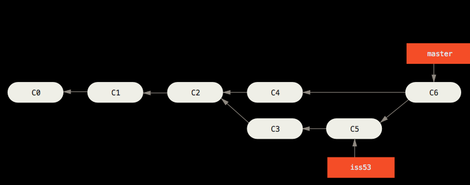

git学习
本文最后更新于：2023年7月23日 中午
马上要合作开发项目了，赶紧来补一补 git 的学习
Git 基础命令
git init 进入你想要的进行版本控制的目录，初始化一个.git 文件夹git status 查看哪些文件处于什么状态git add filename 跟踪一个文件git diff 显示那些行发生了变化git commit -m "message" 提交代码git rm 从 git 中移除某个文件，如果要删除已经修改或者放入暂存区的文件需要加上-f,或者说你想把文件从 Git 仓库中删除，但仍然希望保留在当前工作目录中，可以使用--cached 选项git log查看提交历史git reset HEAD <file>...来取消暂存git checkout -- <file>...取消对文件的修改
远程仓库的使用
git remote 查看已经配置的远程仓库
你也可以指定选项 -v，会显示读写远程仓库使用的 Git 保存的简写与其对应的 URL。git remote add <shortname> <url> 添加一个新的远程 Git 仓库，同时指定一个简写git clone <url> <分支> 克隆一个远程仓库git fetch <url> 会抓取克隆（或上一次抓取）后新推送的所有工作，但是，只会将数据下载到你的本地仓库，不会自动合并或修改，你必须手动将其合并入git pull <url> 通常会从最初克隆的服务器上抓取数据并自动尝试合并到当前所在的分支
总结：
- git pull 从远程获取变更并自动合并到本地分支。
- git fetch 从远程获取变更，但不会自动合并，需要你决定如何集成这些变更。
- git clone 在本地创建一个远程仓库的完整副本，包括所有分支和历史记录，并设置本地工作副本。
git push <remote> <branch> 将分支推到远程仓库
git remote show <remote> 命令列出了当你在特定的分支上执行 git push 会自动地推送到哪一个远程分支。 它也同样地列出了哪些远程分支不在你的本地，哪些远程分支已经从服务器上移除了， 还有当你执行 git pull 时哪些本地分支可以与它跟踪的远程分支自动合并。
git remote rename 来修改一个远程仓库的简写名。git remote remove 或 git remote rm 移出一个远程仓库
标签
git tag 在 Git 中列出已有的标签git tag -a <tag> -m <message> Git 中创建附注标签git show 查看标签和消息git tag <tag> Git 中创建轻量标签git push origin <tagname> 推送标签到远程仓库
如果想要一次性推送很多标签，也可以使用带有 –tags 选项的 git push 命令git tag -d <tagname> 删除标签
分支
git branch <name> 创建一个分支
这会在当前所在的提交对象上创建一个指针。
Git 通过一个名为 HEAD 的特殊指针指向当前所在的本地分支。 git branch 命令仅仅 创建 一个新分支，并不会自动切换到新分支中去。
git checkout 分支切换
1 | |
此时，我们进行一次提交：
1 | |
如图所示， testing 分支向前移动了，但是 master 分支却没有，它仍然指向运行 git checkout 时所指的对象。现在我们切换回 master 分支看看：
1 | |
这条命令做了两件事。 一是使 HEAD 指回 master 分支，二是将工作目录恢复成 master 分支所指向的快照内容。 也就是说，你现在做修改的话，项目将始于一个较旧的版本。 本质上来讲，这就是忽略 testing 分支所做的修改，以便于向另一个方向进行开发。
我们再稍微做些修改并提交：
1 | |
现在，这个项目的提交历史已经产生了分叉。 因为刚才你创建了一个新分支，并切换过去进行了一些工作，随后又切换回 master 分支进行了另外一些工作。 上述两次改动针对的是不同分支：你可以在不同分支间不断地来回切换和工作，并在时机成熟时将它们合并起来。
git checkout -b <name> 新建一个分支并同时切换到那个分支git merge <name> 合并分支
首先，我们假设你正在你的项目上工作，并且在 master 分支上已经有了一些提交。
现在，假设你想要新建一个分支并同时切换到那个分支上，你可以运行一个带有 -b 参数的 git checkout 命令：
1 | |
随后，假设你在 iss53 分支上进行了一些提交
1 | |
现在，你切换回 master 分支：
1 | |
这个时候，你的工作目录和新建 iss53 之前一模一样。
接下来，再建立一个 hotfix 分支，并进行一些提交
1 | |

我们将 hotfix 分支合并回 master 分支上。 可以使用 git merge 命令：
1 | |
在合并的时候，你应该注意到了“快进（fast-forward）”这个词。 由于你想要合并的分支 hotfix 所指向的提交 C4 是你所在的提交 C2 的直接后继， 因此 Git 会直接将指针向前移动。

现在，我们切回 iss53 分支，并再进行一个提交。
1 | |
假设你需要合并 iss53 分支到 master 分支，这和之前你合并 hotfix 分支所做的工作差不多。 你只需要检出到你想合并入的分支，然后运行 git merge 命令：
1 | |
这和你之前合并 hotfix 分支的时候看起来有一点不一样。 在这种情况下，你的开发历史从一个更早的地方开始分叉开来（diverged）。 因为，master 分支所在提交并不是 iss53 分支所在提交的直接祖先，Git 不得不做一些额外的工作。 出现这种情况的时候，Git 会使用两个分支的末端所指的快照（C4 和 C5）以及这两个分支的公共祖先（C2），做一个简单的三方合并。
和之前将分支指针向前推进所不同的是，Git 将此次三方合并的结果做了一个新的快照并且自动创建一个新的提交指向它。 这个被称作一次合并提交，它的特别之处在于他有不止一个父提交。

合并冲突
有的时候合并不会那么顺利，会产生冲突
Git 在产生冲突的时候就不会自动创建一个新合并提交，会等你解决完合并在提交。你可以使用 git status 命令来查看那些因包含合并冲突而处于未合并（unmerged）状态的文件
在你解决了所有文件里的冲突之后，对每个文件使用 git add 命令来将其标记为冲突已解决。 一旦暂存这些原本有冲突的文件，Git 就会将它们标记为冲突已解决。
等你退出合并工具之后，Git 会询问刚才的合并是否成功。 如果你回答是，Git 会暂存那些文件以表明冲突已解决： 你可以再次运行 git status 来确认所有的合并冲突都已被解决：
如果你对结果感到满意，并且确定之前有冲突的的文件都已经暂存了，这时你可以输入 git commit 来完成合并提交。
分支管理
git branch 命令不只是可以创建与删除分支。 如果不加任何参数运行它，会得到当前所有分支的一个列表
--merged 与 --no-merged 这两个有用的选项可以过滤这个列表中已经合并或尚未合并到当前分支的分支。
如果要查看哪些分支已经合并到当前分支，可以运行 git branch --merged
查看所有包含未合并工作的分支，可以运行 git branch --no-merged
git push <remote> <branch> 远程推送分支git push <remote> --delete <branch> 删除远程分支。
Commit Message 规范
遵循 Angular Commit 规范，为了方便编写遵循规范的 commit message，我们使用 Commitizen 进行 git commit
- 全局安装 commitizen
1 | |
- 你可以在本地仓库执行适配器局部安装
1 | |
如有疑问，可参考官网进行配置
安装好以后，凡是用到 git commit 命令，一律改为使用 git cz。这时，就会出现选项，用来生成符合格式的 Commit message